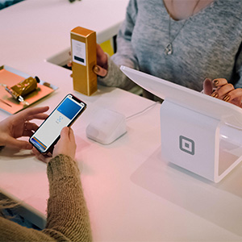

NO.1 고객서비스 전문기업 KT is
KT 무선 고객센터
- 서비스 개요
- kt유선상품, 솔루션 관련 일반 및 전문 상담
- 전화를 통해 kt상품에 대한 업무를 직접 방문 없이 one-stop으로 해결 가능
- 일반상담 분야
- kt 유선상품(일반전화,인터넷,TV,인터넷 전화 등)
- 관련상담, 서비스 신청 및 요금상담, 민원접수 업무
- 1차 고객유지 활동 및 상품유치 활동
- kt유선상품 고장접수 및 각종 기술상담
- 가입 상품 확인, 약속시간 변경 등 각종상품 개통정보 확인 및 조정
- VIP 고객대상 Special관리, 외국어 전담 상담
- 특수상담 분야
- 솔루션 기업 상품(비즈메카, 크로샷서비스 등) 일반/기술 상담
- 추가단말 유치 상담 및 kt상품 가입사실 검증
- 기존고객 유지 및 관리, 마케팅 지원
- kt 전 상품관련 온라인 상담
- SNS를 통한 일반상담 및 클레임 처리
- 일반상담
- 평일 09:00 ~ 18:00
- 토요일 09:00 ~ 12:00
- 고장 접수 및 문의
- 24시간
- SNS상담
- 24시간
KT 유선 고객센터

- 서비스 개요
- kt무선상품(kt휴대폰, 요금제, 부가서비스 등) 관련 상담
- 서비스 범위 및 종류
- kt휴대폰 각종신청/변경/조회, 요금안내, 휴대폰관리, 요금제/부가서비스, 멤버쉽 및 혜택. 제휴/할인서비스, 통화품질 문의
- 사이버 상담 : 이메일, 트위터, 페이스북
- 로밍 이용 문의, 해외망 장애 상담
- 일반상담
- 평일 09:00 ~ 18:00
- 토요일 09:00 ~ 12:00
- 고장 접수 및 문의
- 24시간
- SNS상담
- 24시간